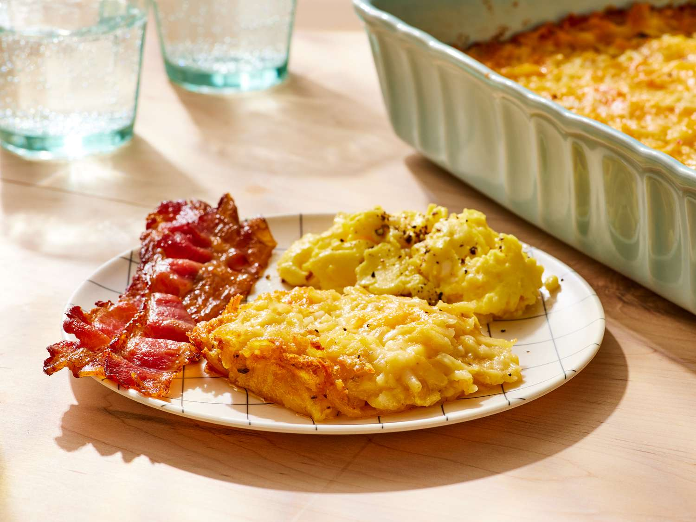

Home
Restaurant-Style Hashbrown Casserole

Description
This hashbrown casserole is a great way to dress up frozen hashbrowns!
Substitute Colby cheese for a change from the usual Cheddar.
Ingredients
- 1 (2 pound) package frozen hash brown potatoes, thawed
- 1 (10.75 ounce) can condensed cream of chicken soup
- 2 cups shredded Cheddar cheese
- ½ cup chopped onion
- ½ cup butter, softened
- 1 teaspoon salt
- ½ teaspoon ground black pepper
Directions
- Gather all ingredients.
-
Preheat the oven to 350 degrees F (175 degrees C). Spray a 9x13-inch
dish with nonstick cooking spray.
-
Gently mix potatoes, soup, cheese, onion, butter, salt, and pepper in a
large bowl. Pour into the prepared dish.
- Bake in the preheated oven until browned, about 1 hour.
- Serve and enjoy!